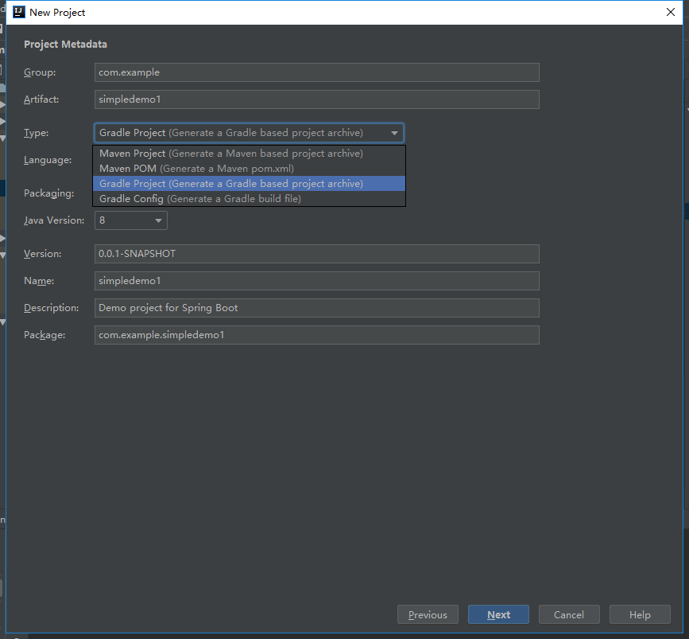
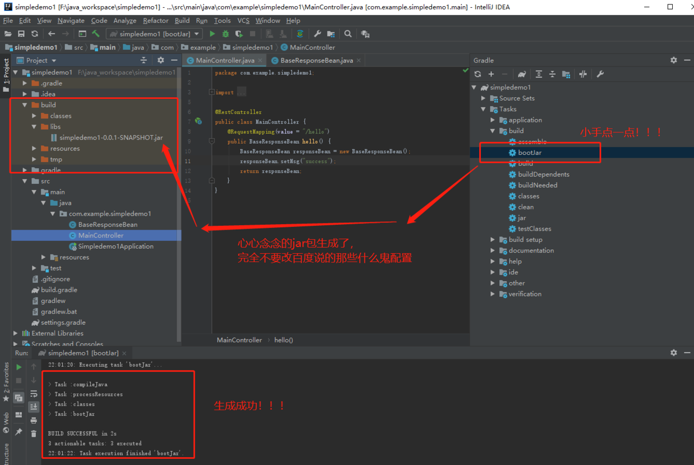
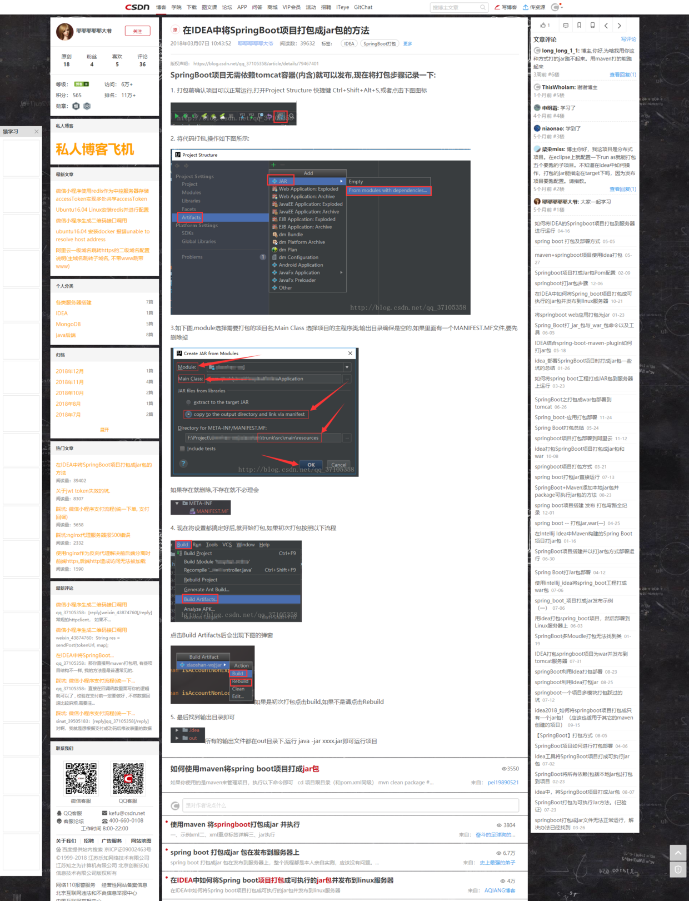

Idea打包Springboot项目为可运行jar包并发布
Gradle项目2018.12.25
首先强烈谴责百度搜出来的不负责的结果，99%的都不能用，80%都是重复的文章，那些什么配Artifacts生成jar没卵用，不管设置MANIFEST.MF在src/main/java，还是src,还是src/main/resource都不能用，就算生成了没有Main-class文件的MANIFEST.MF，后面手动添加Main-class也没用，其实用Gradle构建的Springboot项目，生成可运行jar包超级简单，如图：
 ----------------------------------------下面的是失败案例，不想看的可以直接跳过------------------------------------------------------
失败案例其中包括： 第一种不能用的：https://blog.csdn.net/qq_37105358/article/details/79467401
第二种用不了的：https://blog.csdn.net/asd1098626303/article/details/60868123

第三种不能用的：https://blog.csdn.net/weixin_40569991/article/details/80653229